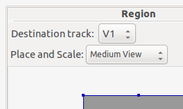

Flowblade Movie Editor is a
multitrack non-linear video editor for Linux.
With Flowblade Movie Editor you can compose movies from video clips, audio clips and graphics files. Clips can be
cut at the desired frames, filters can be added to clips, and you can create multilayer composite images using compositor
objects.
In Flowblade clips are usually automatically placed tightly after the previous clip - or between two existing clips
- when they are inserted on the timeline. Edits are fine tuned by trimming in and out points of clips, or by cutting
and deleting parts of clips.
Flowblade Movie Editor saves work in project files.
To create a new Project:
Menu: Select
File -> New from menu.
Keyboard Shortcut: Press
Control+N.
A project contains:
one or more Sequences of edited media
a collection of Media Files stored in Bins.
There are two parameters that can be selected for a new project:
Project Profile Project Profile determines frame rate per second, image size in pixels and pixel aspect ratio.
Tracks count Select the number of video and audio tracks that are used in the project. This can be changed later,
but the operation destroys the Undo / Redo stack and all the Timeline Clips that do not fit in the newly created
version of the Sequence.
Video material is internally scaled to profile dimensions, so selecting Project Profile with smaller pixel dimensions than
the rendered output leads to decreased quality.
Flowblade Movie Editor handles image data internally as YUV420 frames, so the encoding associated with a given profile has
no affect on quality before rendering.
For
best possible quality the
input material, Project Profile and Rendering Profile should
all have the same pixel dimensions and pixel aspect ratio.
A Project contains one or more Sequences. The term Sequence refers to the full contents of the timeline forming a program,
a movie.
For complex projects it is sometimes best to use multiple sequences for creating and managing different parts of the finished
product.
Use
Add and
Delete buttons in the
Project tab
Sequences panel. All Sequences use the same Profile.
When creating a new Sequence, you can choose the number of Tracks in the Sequence. This can be changed later, but the operation
destroys the Undo / Redo stack and all the Timeline Clips that do not fit in the newly created version of the Sequence.
Flowblade Movie Editor holds files in
Media tab. Files are listed in unnamed table that displays contents of the currently selected Bin. Bins are listed
in the
Bins table.
Opening Media Files:
Press
Add button above the unnamed Bin contents table in the
Media tab.
Use dialog to find and select files.
Files are displayed as thumbnails.
Note that creating thumbnails for opened files will take some time.
Project Media: Absolute and relative paths
Flowblade
saves references to media files used in a project as
absolute paths.
If a media is
not found on load, Flowblade attempts to find a media file with the same name in subfolders relative to the
project file.
If all media used by a project is saved in subfolders relative to project file,
project file and media can moved as a unit and the project will load successfully after data is copied to a
different place
Rendered files like transitions
are saved by default in a hidden folder/.flowblade/rendered_clips/.
Menu item
File->Save Backup Snapshot... saves project file, all media and rendered files in a single folder that can
saved as unit and and project can always be loaded using this data
Load order between absolute and relative paths can be set in preferences window
Media Relinker tool can be used to fix problems that may occur
NOTE: Information given here only applies to version 0.18 and above.
Click
Track Active Switch on the right side of Tracks Column area. Topmost
Track Active Switch displays arrow pointing downwards indicating that
Insert From Monitor and other buttons place clips on that track.
Inserting Media File that is currently displayed in Monitor using
Insert From Monitor, Append From Monitor or
3-Point Ovewrite buttons places clip on the top most active Track indicated by arrow icon.
selecting
Open in Clip Monitor item from
Right Mouse context menu.
Select insert range
Use
Mark In and
Mark Out buttons to select range.
Use
I an
O keys to set to select range.
If range is not set, then the full clip length will be inserted.
Press
Insert From Monitor button
Clip will be inserted on the first active track at the cut nearest of the currently displayed frame. First active
track is marked by down arrow in the track Active Switch.
Splice Out: Select clip(s) and press
Delete key or use the
Splice Out button on middle bar. All the clips in the track after the deleted clip(s) are moved to left to cover
the created empty space. Some editors call this operation
Ripple Delete.
Lift: Select clip(s) and press the
Lift button on the middle bar. Clip is replaced with a blank if it is in middle of track. Other clips on the track
are not moved.
Fade/Transition cover delete: Select a single rendered fade or transition clip and press
Delete key or button. If clips before and after of the deleted clip have frames available, then the space left
by the deleted clip will covered using material from adjacent clips. If material is not available a splice out will
be performed. A preference exists to always perform splice out on fades and transitions.
Use Keyboard Shortcuts! It is much faster to use
X key to cut clips and
Delete key to splice out clips than it is to use buttons for the same operations.
Make clip longer or shorter from either clip's end or from clip's beginning and move items on other tracks to maintain position
sync with trimmed track.
Pick 'Trim' tool
Press
R key to switch to Multi Track Ripple mode.
Select trimmed cut and select new in or out frame
Press with
Left Mouse on a clip near the side you wish to trim
Continue on to
Left drag on clip to select new in or out frame
Items after trim point maintain position sync with trimmed track.
Trim range is limited so that no overwrites can happen on other tracks.
When an
Insert, Overwrite or
Spacer tool is selected the ends of clips can be dragged to lengthen or shorten the clip.
Pick 'Insert', 'Overwrite' or 'Spacer' tool
Use
Tool Switcher button drop menu or press
1, 2 or
6 key.
Select clip end to trim
Click
Control + Right Mouse on a clip.
The nearer clip end will be selected for edit.
Drag clip end
Added clip length will perform overwrite on blanks and empty space
Added clip length will perform insert on other clips
Decreased clip length will perform splice out.
Creatring composed images
Flowblade Movie Editor uses Compositors to mix images from two different tracks. By combining multiple tracks and multiple
Compositors complex composite images can be achieved.
Compositors have a Source track and a Destination track.
On the Timeline Compositor is displayed as a dark rectangular object that is displayed on top of two tracks. Source track
is always the one above Compositor, but Destination track may be any of the tracks below it.
Parameters defining the resulting composite are edited in the
Compositors tab.
There is a subtype of Compositors called Blenders. Blenders do the standard blends like Add, Softlight and Darken, but offer
no transformations, nor any method to control the amount of blend.
Click
Right Mouse on any clip on tracks from V5 to V2 and select for example
Add Compositor -> Dissolve or
Add Blender -> Softlight from popupmenu to create a new Compositor.
Trimmimg or Moving a Compositor
To trim Compositor start and end points: Press and drag
Left Mouse near either end of Compositor on Timeline.
To move Compositor: Press and drag
Left Mouse in the middle of Compositor on Timeline.
Editing Compositor Parameters in Compositors Tab
Double click Compositor with
Left Mouse.
Click
Right Mouse on any Compositor and select Open In Compositor Editor
Edit parameters using value editors.
Deleting Compositor
Click
Left Mouse on any Compositor to select it and press
Delete key.
In Flowblade Movie Editor
the order of rendering is top-to-bottom, instead of bottom-to-top like in Gimp or Photoshop. When attempting certain
type of multilayer composites this yields results that seem unintuitive, unless the user is aware of rendering order
of Compositors.
In this example we demonstrate how top-to-bottom Compositor order affects compositing. We are trying to make word 'GO' apperar
on top of 2-color background made by combining red and blue Color Clips using 'Free Stripes' wipe.
Here we have arranged clips on the tracks as we would arrange layers in Gimp.
Gimp style layer order
What happens here is that first 'GO.PNG' is composited on 'RED' Color Clip, and the resulting image is composited using 'Free
Stripes' wipe on top of 'BLUE' Color Clip. We get the wrong result.
Here we have arranged clips in correct order for the desired result.
Correct layer order
Here 'RED' Color Clip is first composited using 'Free Stripes' wipe on 'BLUE' Color Clip. After that 'GO.PNG' is composited
on top of the resulting image (that is already rendered on track V1) using 'Dissolve' to get final output image.
Destination track in 'Region' Compositor is V1, Source track is V3

Desired result
Filtering image and audio
In Flowblade Movie Editor you can add a Filters to all clips to modify output image and audio.
Media items that are not present in current Project will be opened in the current bin. Note that it takes a few seconds
to load the project before new Media Items begin to appear.
A
Compound Clip is a single clip created by combining multiple clips and compositors in to a single media item.
In Flowblade Compound Clips are
implemented by creating an MLT XML file that is saved in a hidden folder. Note that it is currently not possible
to unpack a Compound Clip back to its components.
Compound Clips are useful when some complex sequence is more conveniently handled as a single unit.
Sync relations are set up by selecting a
Sync Parent Clip for a
Sync Child Clip.
Only clips on track V1 can be Sync Parent Clips. This is done to encourage edit style in which the main body
of the Sequence is on track V1 and composites and audio split edits are done relative to the clip sequence on track
V1.
Sync feature helps preserve earlier work an multitrack composites and audio split edits when clips are no longer
in correct positions relative to each other, because of edits elsewhere on the Sequence.
Resyncs are only done on request to avoid jumping of clips on the timeline while editing. Explicit resyncs are
also better from the point of view of avoiding side effects when doing edits.
This functionality is mainly useful then there are
media items that contain multiple areas of interest or if the user wants to save in and out points of an edit for
later use.
A typical example use case for the feature would be:
User has a long clip of a speech delivered at some social function, congress, company event, etc.
User wants to mark and name the interesting parts of the speech
Press 'Append displayed..." -button on the bottom right corner to append all Items as Clips on active Track
Press 'Insert selected..." -button next to bottom right corner button to insert all selected Items on active track
at nearest cut from the currently displayed Timeline position
Proxy clips used in proxy editing usually have smaller data rate and less CPU intensive decoding. There are two main reasons
to use proxy editing:
Original media from which the program is edited makes too high demands for either disk bandwidth or CPU processing
power for decoding to enable responsive editing
Original is kept on network server, slow external disk or other media with restricted access and does not enable provide
responsive editing if accessed directly.
Select
Project->Proxy Manager in menu and set proxy file settings in
Proxy Encoding area
Select Video Media files in
'Media' Panel
Press button with proxy file icon next Delete button in 'Media' Panel
If Project is already in
'Using Proxy Media' proxy mode, timeline clips with original media that had proxy media rendered to will be
replaced with proxy media immediately
Converting to use Proxy media
Select
Project->Proxy Manager to open Proxy Manager
Press
Use Proxy Media button
Editing with proxy media
Clips that use proxy media have a blue stripe indicating that status
A proxy editing indicator icon is displayed at left bottom corner
If new proxy media is rendered timeline clips using the original media in question will be replaced with proxy media
immediately
Project can be saved normally and converted after load to use original media
Converting to use Original Media
Select
Project->Proxy Manager to open Proxy Manager
DESTROYING ANY MEDIA while doing proxy editing WILL PREVENT CONVERTING BACK TO USING ORIGINAL MEDIA
It is only possible to use all
existing proxy media and clips or all original media. It is not possible to use only some of the created
proxy media.
Flowblade uses a programming techique that changes the paths used by media items and clips to point either to hidden proxy
media or original media.
Changing from one to another is implemented by writing a hidden temporary project file to disk and replacing paths when project
is read back. Because of this any missing original media makes conversion back to using original media fail.
Tools
Flowblade provides standalone tools for important functionality that cannot be logically or conveniently presented via top
left panels or the timeline.
Media Relinker is a standalone application running in its own process and does not affect the project that is open in Flowblade
Start by pressing
Load Project For Relinking button and select the project you wish to relink.
Select the media file you wish to replace with some other media file. Press
Set File Relink Path button or press
Right Mouse on item to start selecting the new file. Clips and wipes in the project are linked to this new
media file.
Use drop down menu at bottom left to display either missing or found media files
Press
Save Relinked Project As... button to save the relinked version of the project
Open the relinked project in Flowblade and continue working with it
Media Relinker runs in its own process and does not share state or data with the running application.
When relinking a project you have open in Flowblade at the same time make sure that do not overwrite the relinked
version of project when saving the project you have open in Flowblade
G'MIC is a full-featured open-source framework for image processing.
Flowblade G'MIC tool presents user with a selection of commads that can be used to achieve complex filtering of video clips.
NOTE: If a command is not present in the system then the corresponding filtering selection will not work.
Commands are mostly embedded in the
/usr/bin/gmic binary itself, so to have access to more commands you will mostly need to upgrade the binary in
your system.
It is however possible to add and use custom commands and use them for video filtering,
more info here.
To render a frame sequence you will need to set
Mark In and Mark out points and
select a folder to hold the rendered frame sequence.
To render a video file from the filtered frame sequence, check
Encode video checkbox and press the
Encoding Settings button to set properties of the rendered video file.
Rendering
In Flowblade there are two ways to render output:
Render Panel in the top left notebook in the main window.
Batch Render Queue application that can launched from Render menu.
Almost all the encodings available for FLOSS applications can used in Flowblade.
Flowblade offers a dedicated Batch Render Queue application. Batch Render Queue is a separate application to Flowblade and
runs on different process, so it is possible to close Flowblade without affecting ongoing renders.
Render queue is a persistent data structure of render items on disk. Each item consists of a Project file and saved render
parameters. Users can add render items to render queue and then render the whole queue without any further user input.
Flowblade Movie Editor is a Python application interfacing to MLT multitrack media framework. Other video editing applications
build on top of MLT include OpenShot and Kdenlive.
MLT uses C-library libavformat(FFMpeg) to render output files, and rendering is defined by setting FFMpeg encoding parameters.
These parameters are delivered from Flowblade Movie Editor to MLT by creating a "avformat" Consumer object for a
given Render Profile, and then setting its Rendering Args. These latter arguments are exactly the same which are
used when using FFmpeg to encode video files.
Rendering arguments for encoding different types of video files are pre-packed and can be selected using Encocing / Format
and Quality Drop Down Menus. Arguments can be refined by checking Render with args Checkbox and changing args values
and/or adding/removing args.
Any kind of video files supported by the installed version of MLT can be encoded by creating a user defined Render Profile
and setting its Rendering Args. Google for FFMpeg encoding to find Args combinations for different video files.
Search web for information on encoding files with FFMpeg to get examples of Rendering Args that can be used.